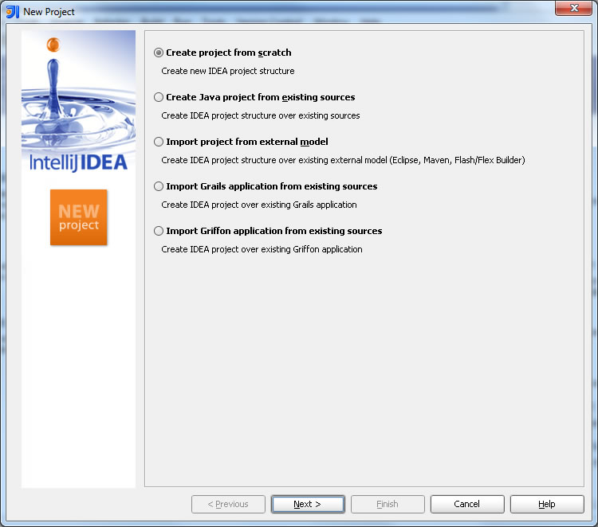
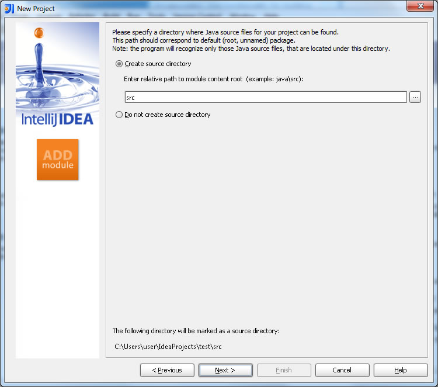
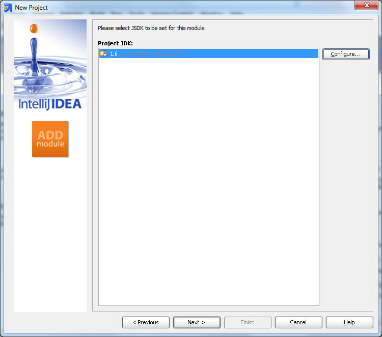
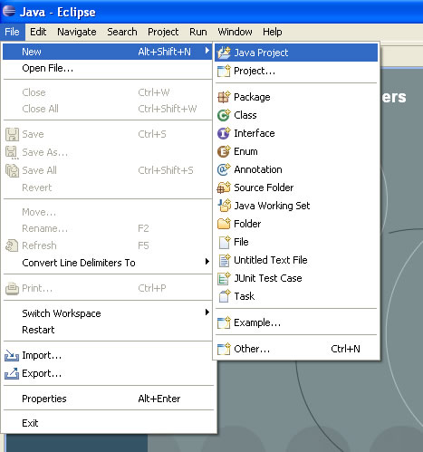
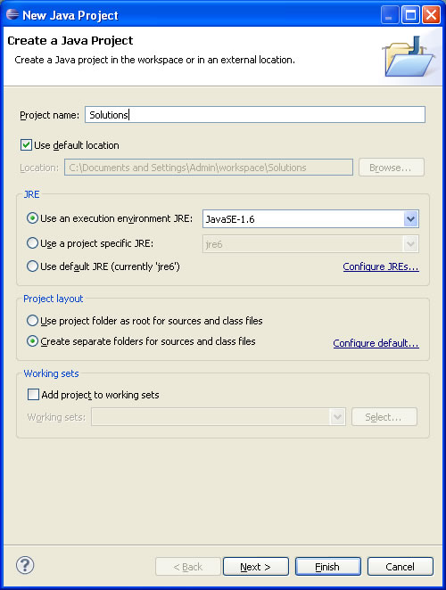
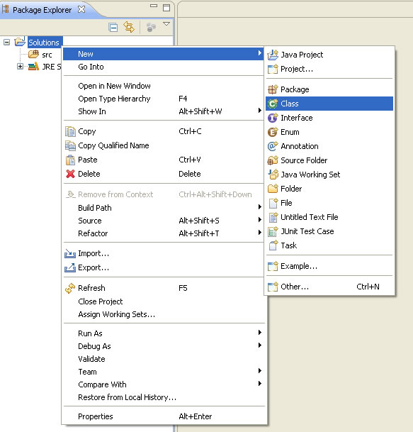
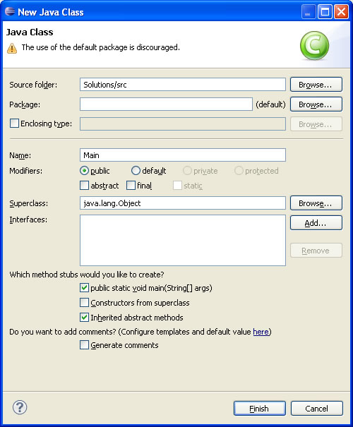

Язык программирования Java
JavaНа студенческих олимпиадах по программированию большинство команд сейчас использует язык программирования Java, но в большинстве школ его не изучают.
С середины 2000-х команды - чемпионы мира из ИТМО пишут решения всех задач на Java. Всё больше команд используют этот язык на Всероссийской олимпиаде школьников.
Установка Java
Java Development Kit (JDK)
Бесплатно распространяемый комплект для Java, включающий в себя:
- Исполнительную систему Java (JRE - Java Runtime Environment) - необходима для выполнения всех Java-программ
- Компилятор Java (javac)
- Стандартные библиотеки классов Java
- Примеры, документацию, различные утилиты
В состав JDK не входит интегрированная среда разработки на Java (IDE), поэтому разработчик, использующий только JDK, вынужден использовать внешний текстовый редактор и компилировать свои программы, используя утилиты командной строки или стороннюю IDE.
Все современные интегрированные среды разработки на Java, такие, как NetBeans, Sun Java Studio Creator, IntelliJ IDEA, Borland JBuilder, Eclipse, опираются на сервисы, предоставляемые JDK. Большинство из них для компиляции Java-программ используют компилятор из комплекта JDK. Поэтому эти среды разработки либо включают в комплект поставки одну из версий JDK, либо требуют для своей работы предварительной инсталляции JDK на машине разработчика.
Источник для установки: http://www.oracle.com/technetwork/java/javase/downloads/index.html, далее скачать Java Platform (JDK).
Первая программа на Java в IntelliJ Idea
Установка IntelliJ Idea
Источник для установки: http://www.jetbrains.com/idea/ - на странице http://www.jetbrains.com/idea/download/index.html можно бесплатно скачать Community Edition, которая для решения задач не уступает полной версии.
Создание первой программы ("Hello world!")
Жмем Create New Project

Выбираем Create project from scratch
Название проекта - произвольное. При решении задач можно использовать один проект для решения всех задач.

Опционально, но для удобства создаб\ют отдельную папку src

При первом включении IntelliJ IDEA, программа попросит указать путь к JDK (чаще всего C:\Program Files\Java\jdk*.*.*_**)
При создании проекта для решения задач этот шаг опускается.
//file name - HelloWorld.java
public class HelloWorld {
public static void main(String[] args) {
System.out.println("Hello world!"); // вывод строки в консоль
}
}
Первая программа на Java в Eclipse
Eclipse - Среда разработки для Java
Для работы необходимо установить JDK.
Источник для установки: http://www.eclipse.org/downloads/, выбрать Eclipse IDE for Java Developers, скачать его, распаковать zip-архив в прозвольную папку, зайти в неё и запустить eclipse.exe.

Название проекта - произвольное. При решении задач можно использовать один проект для решения всех задач.

Создаём файл проекта:

Введите название вашего класса, например Main, выделите создавать static void main(String[] args)

/*
* Весь текст, который находится между косой чертой и звездочкой и до
* звездочки с косой чертой считается коментарием и никак не влияет на работу
* программы.
* Коменнтарии нужны, что бы человек мог поставить различные пометки по тексту
* программы, что бы потом быстрее разобратся.
* Кроме того коментарием считается строка начинающаяся с двух косых черт // и
* до конца строки
*/
package example; // Имя пакета. Оно означает что наш файл лежит в папке src/example/
/**
* Обычно перед началом класса пишут описательный коментарий о нем
* и указывают авторство
* @author fbasin
*/
public class MainClass { // Заголовок класса состоит из трех частей. «Указатель доступа»
// «ключевое слово class» «Имя класса»
/**
* По правилам хорошего тона перед каждым методом надо писать коментарий с
* описанием метода принимаемыми параметрами и возвращаемым результатом
* @param args the command line arguments
*/
public static void main(String[] args) { // Структура заголовка метода следующая:
// «Указатель доступа» «Признак статичного доступа» «Возвращаемый результат»
// «Имя класса» «Принимаемые параметры»
// TODO code application logic here
} // Завершение метода
} // Окончание описания класса.
В современном программировании есть большое число различных языковых конструкций (команд, операторов, структур), которые позволяют эффективно и сжато решать множество сложных задач, но есть несколько базовых элементов знания которых уже достаточно что бы писать работающие программы.
Переменные
Это поименнованные области памяти, в которой может быть сохранено значение определенного типа. Сохраненное значение переменной будет доступно во всей области видимости переменой до окончания выполнения программы.
Каждая переменная имеет два атрибута:
Имя переменной - должно быть уникальным в области видимости и начинатся с буквы.
Тип переменной - указывает на то, какой тип значений может буть сохранен в переменной. Простейшие типы, целое число, дробное число, логическое значение да/нет.
Типы данных языка Java
Для всех простейших встроенных типов Java существуют классы-обертки, в которые включены полезные методы, например подсчет количества бит в числе, конвертация строки в число.Целочисленные типы
- byte - 8-битный знаковый тип. Обертка - Byte. Числа от -128 до 127.
- short - 16-битный знаковый тип (-32.768..32.767). Обертка - Short.
- int - 32-битный знаковый тип ($-2^{31}$..$2^{31}-1$). Обертка - Integer.
- long - 64-битный знаковый тип ($-2^{64}$..$2^{64}-1$). Обертка - Long.
Вещественные типы
- float - 32-битный знаковый тип. Обертка - Float.
- double - 64-битный знаковый тип. Обертка - Double.
Логические типы
- boolean - принимает два значения - "true" или "false". Обертка - Boolean.
Символьные типы
- char - 16-битный Unicode-символ. Обертка - Character.
Строчные типы
- Строки реализованы классом String.
Примеры программ
Программа "Hello world!"
public class Test {
public static void main(String[] args) {
System.out.println("Hello world!");
}
}
Решение задачи "A+B" с консольным вводом/выводом.
import java.util.Scanner;
public class Main {
public static void main(String[] args) {
Scanner cin = new Scanner(System.in);
int a = cin.nextInt(), b = cin.nextInt();
System.out.println(a + b);
}
}
Решение задачи "A+B" с вводом из файла sum.in и выводом в файл sum.out.
import java.io.File;
import java.io.PrintWriter;
import java.util.Scanner;
public class Main {
public static void main(String[] args) throws Exception {
Scanner in = new Scanner(new File("sum.in")); // Открываем входной файл
PrintWriter out = new PrintWriter(new File("sum.out")); // Открываем выходной файл
int a = in.nextInt(), b = in.nextInt();
out.println(a + b);
in.close();
out.close();
}
}
Решение задачи "A+B" с длинными числами и вводом из файла sum.in и выводом в файл sum.out. Используется встроенный класс BigInteger.
import java.io.File;
import java.io.PrintWriter;
import java.math.BigInteger;
import java.util.Scanner;
public class Main {
public static void main(String[] args) throws Exception {
Scanner in = new Scanner(new File("sum.in")); // Открываем входной файл
PrintWriter out = new PrintWriter(new File("sum.out")); // Открываем выходной файл
BigInteger a = in.nextBigInteger(), b = in.nextBigInteger(); // Считываем входные данные
out.println(a.add(b)); // Вычисляем и выводим ответ
in.close(); // Закрываем входной файл
out.close(); // Закрываем выходной файл (ОБЯЗАТЕЛЬНО! Иначе на выходе может быть пустой файл)
}
}
Организация ввода/вывода при помощи класса BufferedReader
Использование классов BufferedReader и StringTokenizer позволяет существенно ускорить считывание.
import java.io.*;
import java.util.*;
public class Pattern implements Runnable {
BufferedReader br; // экземпляр BufferedReader - хранит буфер
StringTokenizer in; // класс, обеспечивающий быструю и удобную работу со строками -
// разбивание строки на кусочки по произвольным символам
PrintWriter out;
// Возвращает следующую подстроку, ограниченную пробелами(переводами строк, табуляциями)
public String nextToken() throws IOException {
//если in еще не существует или в нем нет больше токенов,
//то in конструируется от следующей строки входного файла
while (in == null || !in.hasMoreTokens()) {
in = new StringTokenizer(br.readLine());
}
return in.nextToken();
}
//Возвращает следующее целое число из входного файла
public int nextInt() throws IOException {
return Integer.parseInt(nextToken());
}
//Возвращает следующее целое число из входного файла. Предполагается, что оно не помещается в int
public long nextLong() throws IOException {
return Long.parseLong(nextToken());
}
//Возвращает следующее вещественное число из входного файла
public double nextDouble() throws IOException {
return Double.parseDouble(nextToken());
}
//метод, в котором пишется решение
//пример - задача а+б
public void solve() throws IOException {
int a = nextInt();
int b = nextInt();
out.println(a + b);
}
public static void main(String[] args) {
new Pattern().run();
}
public void run() {
try {
//из консоли:
br = new BufferedReader(new InputStreamReader(System.in));
out = new PrintWriter(System.out);
//из файла:
//br = new BufferedReader(new FileReader("input.txt"));
//out = new PrintWriter("output.txt");
solve();
out.close();
} catch (IOException e) {
e.printStackTrace();
System.exit(1);
}
}
}
Конструкции языка Java
import java.io.File;
import java.io.PrintWriter;
import java.math.BigInteger;
import java.util.Scanner;
public class Main {
static int addOne(int a) {
return a + 1;
}
public static void main(String[] args) throws Exception {
Scanner in = new Scanner(new File("F1.in")); // Открываем входной файл
PrintWriter out = new PrintWriter(new File("F1.out")); // Открываем
// выходной файл
// Объявление переменных
// Целые типы
int c = 2, C = 5; // "C" и "с" - разные переменные
System.out.println(c + C);
long L = 21423412412534L;
System.out.println(long.class.isPrimitive() + " " + L);
// Нецелые типы
float ff = 2;
double dd = 2.123414;
System.out.println(" " + ff + " " + dd);
// Булевы переменные
boolean b1 = true, b2 = false;
System.out.println("b1 = " + b1 + " b2 = " + b2);
// Строки и символы
String s = "Test string"; // Используются двойные кавычки для строк
char ch = 'c';
System.out.println("s = " + s + " ch = " + ch);
// Массив целых чисел
int A[] = { 2, 3, 4, 36 }; // Инициализация массива "сразу"
for (int element : A)
// foreach
System.out.println(element);
for (int i = 0; i < A.length; i++)
System.out.println(i + ". " + A[i]);
int N = 100;
long B[] = new long[N]; // Заводим в памяти массив на N значений
// Индексами массива будут числа 0..N-1
B[0] = 1;
B[1] = 1;
for (int i = 2; i < N; i++)
// Цикл for
B[i] = B[i - 1] + B[i - 2];
System.out.println(B[N - 1]);
// Вычисляем 100! (факториал)
BigInteger S = new BigInteger("1");
for (int i = 1; i <= 100; i++)
S = S.multiply(new BigInteger("" + i));
System.out.println(S);
// Условия (условный оператор)
if (ch == 's' && b2) { // && - AND, || - OR, ! - NOT
// Действия по выполнению условия
} else {
// Действия в противном случае
}
// Неверно, что символ ch равен 'b' и ff больше 2
if (!(ch == 'b' && ff > 2)) { // "=" - присваивание, "==" - сравнение
}
// Переведём число K в двоичный вид
// Цикл с предусловием
int K = 20;
while (K > 0) { // Пока K > 0
// Печатаем K
System.out.println(K % 2);
// И делим нацело на 2
K /= 2; // K = K / 2
}
// Цикл с постусловием
int x = 1;
do {
// Печатаем K
System.out.println(x);
x *= 2; // x = x * 2
} while (x < 100);
// Преобразования строки в число
int i = Integer.parseInt("213");
long l = Long.parseLong("213");
double d = Double.parseDouble("213.2");
float f = Float.parseFloat("213");
boolean b4 = Boolean.parseBoolean("true");
System.out.println(i + " " + l + " " + d + " " + f + " " + b4);
// Вызов функции
System.out.println(addOne(3));
BigInteger a = in.nextBigInteger(), b = in.nextBigInteger();
out.println(a.add(b));
in.close();
out.close();
}
}
Реализация динамического стека
// - Символ -
class charValue implements Value {
char value;
charValue(char v) {
value = v;
};
@Override
public void show() {
System.out.println("Char = " + value);
}
};
// - Действительное число (double) -
class doubleValue implements Value {
double value;
doubleValue(double v) {
value = v;
};
@Override
public void show() {
System.out.println("Double = " + value);
}
}
// - Целый тип -
class intValue implements Value {
int value;
intValue(int v) {
value = v;
};
@Override
public void show() {
System.out.println("Integer = " + value);
}
}
// - Управление стеком -
class Stack {
stackElement head;
boolean is_empty() {
return head == null;
};
stackElement pop() {
stackElement current = head;
if (head != null)
head = head.next;
return current;
};
void push(Value v) {
stackElement se = new stackElement(v);
se.next = head;
head = se;
};
void show() {
System.out.println("Stack elements:");
stackElement current = head;
if (current != null)
while (current != null) {
current.value.show();
current = current.next;
}
else
System.out.println("Stack in empty!");
};
}
public class StackDemo {
public static void main(String arg[]) {
System.out.println("- Stack demo -");
Stack s = new Stack();
// Добавляем элементы
s.push(new intValue(1));
s.push(new stringValue("Test 2"));
s.push(new charValue('@'));
s.push(new doubleValue(3.14159265386));
// Выводим содержимое стека на экран
s.show();
// Удаляем из стека все элементы
while (!s.is_empty())
s.pop();
// Еще раз выводим содержимое стека на экран
s.show();
};
}
// - Элемент стека -
class stackElement {
Value value;
stackElement next; // Следующий элемент стека;
stackElement(Value v) {
value = v;
}
}
// - Обработчик исключений стека -
class StackException extends Exception {
StackException(String errorMessage) {
super(errorMessage);
};
};
// - Строка -
class stringValue implements Value {
String value;
stringValue(String v) {
value = v;
};
@Override
public void show() {
System.out.println("String = " + value);
}
};
// - Значение в стеке -
interface Value {
void show(); // Можно выводить на экран
}
Преимущества языка Java
- Очень строгий синтаксис, поэтому есть возможность автоформатирования кода.
- Кроссплатформенность.
- Большая встроенная библиотека: длинная арифметика (классы BigInteger, BigDecimal), структуры данных, работа со строками.
- Объектно-ориентированный, высокий уровень абстракции.
Garbage Collector - система которая автоматически удаляет неиспользуемые объекты из динамической памяти. Поэтому на Java не нужно думать о ручном освобождении памяти.
Пример на Java "Скотный двор"
Дано прямоугольное поле NxN клеток, надо расставить на нём M животных, так чтобы они не пересекались. Животные могут ходить на одну клетку влево, вправо, вперёд, назад.
// Файл Animals.java
public class Animals {
public static void main(String[] args) {
// Наш скотный двор
int Size = 10;
char[][] Map = new char[Size][Size];
// Сначала всё поле пустое
for (int i = 0; i < Size; i++)
for (int j = 0; j < Size; j++)
Map[i][j] = ' ';
int M = 7; // Количество животных
for (int animal = 1; animal <= M; animal++) {
nextAnimal: // Метка для перехода
// Ищем свободную клетку
for (int i = 0; i < Size; i++) {
for (int j = 0; j < Size; j++) {
if (Map[i][j] == ' ') { // Если клетка свободна, становимся в неё
Map[i][j] = (char) ('0' + animal);
// Занимаем клетки вокруг
if (i > 0)
Map[i - 1][j] = '#';
if (i < Size - 1)
Map[i + 1][j] = '#';
if (j > 0)
Map[i][j - 1] = '#';
if (j < Size - 1)
Map[i][j + 1] = '#';
// Переходим к расстановке следующего животного
break nextAnimal;
}
}
}
}
// Показываем поле
for (int i = 0; i < Size; i++) {
for (int j = 0; j < Size; j++)
System.out.print(Map[i][j]);
System.out.println();
}
}
}
class HelloWorld {
public static void main(String[] arg) {
System.out.println("Таблица умножения:");
for(int i=1;i<=29;i++){
for(int j=1;j<=29;j++){
String s = " "+(i*j);
while(s.length() < 4) s = " " + s;
System.out.print(s);
}
System.out.println();
}
}
}